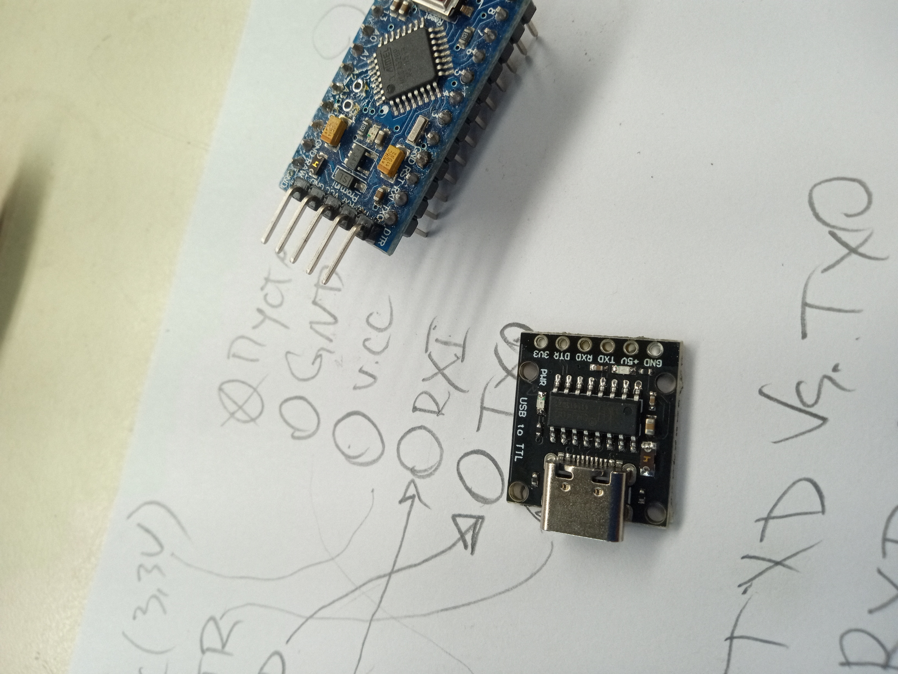
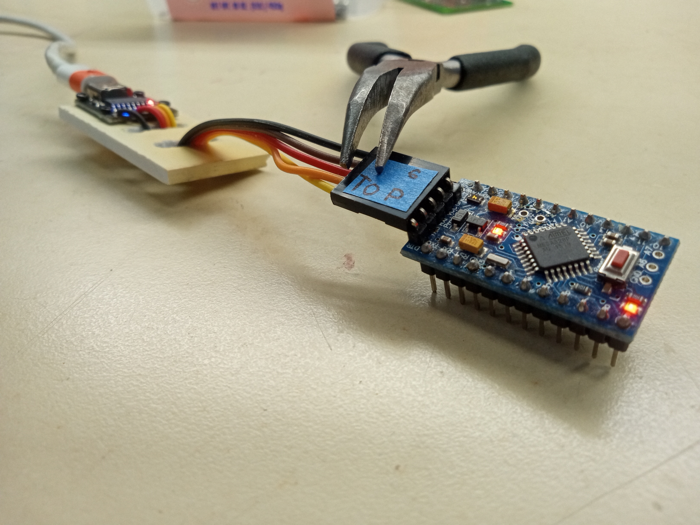
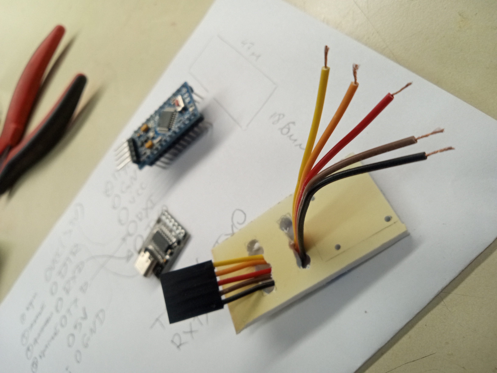
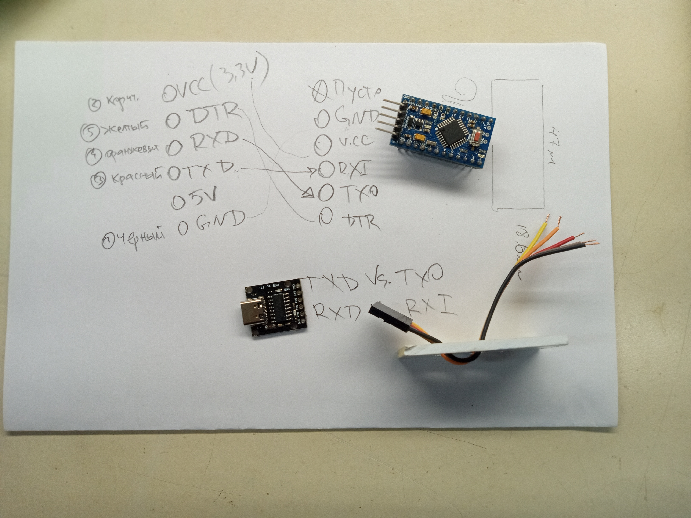
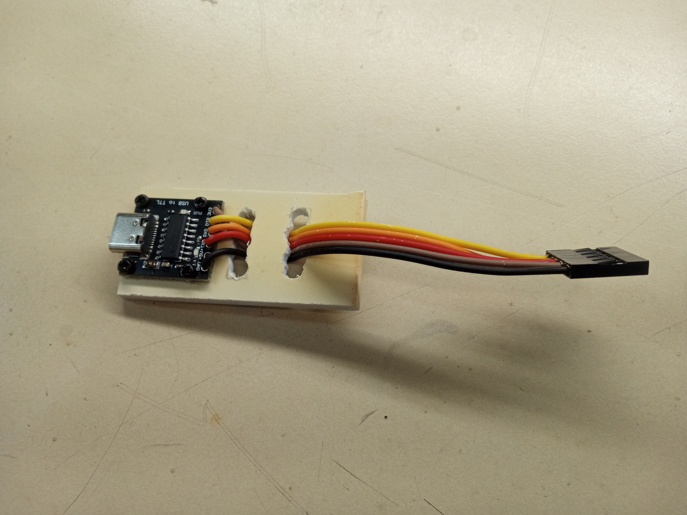
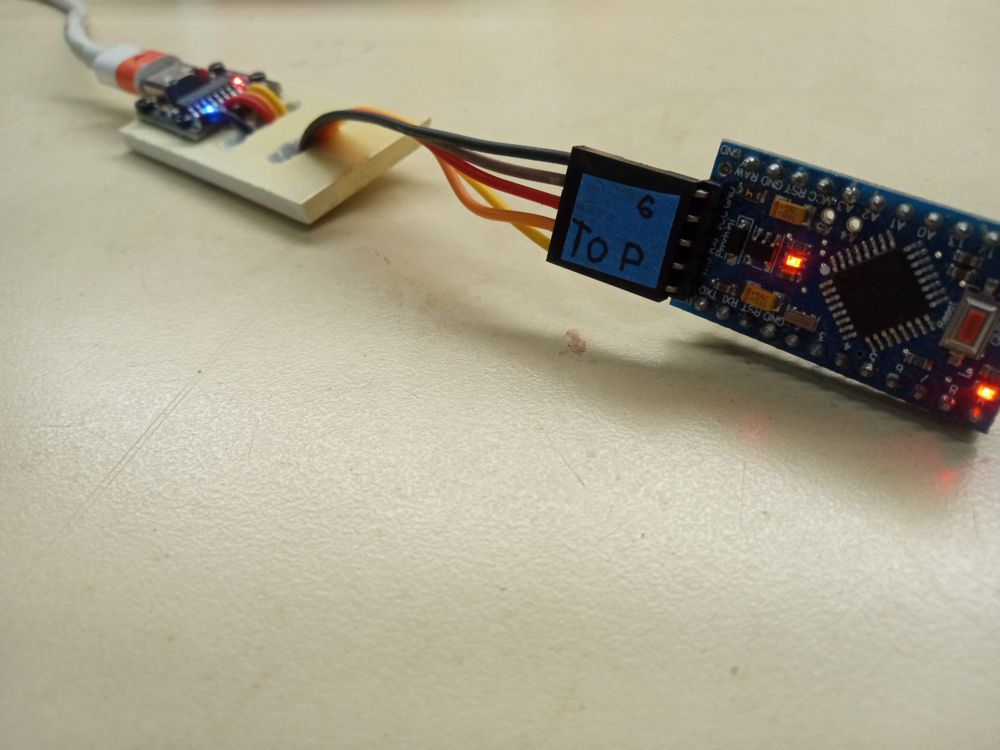
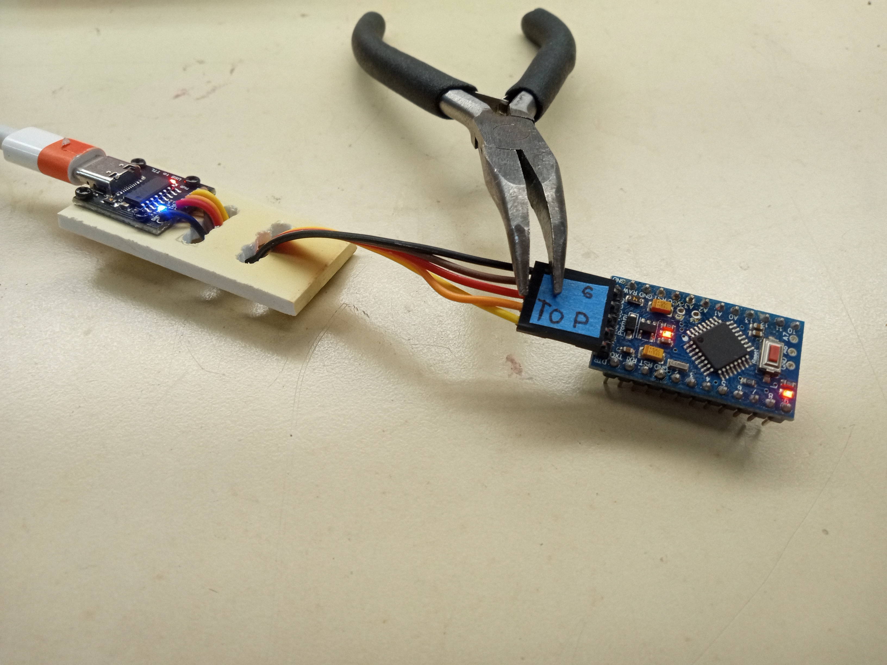

I began with taking my microcontroller and taking a USB-C port module.


Project snapshot
I created this because my Arduino Nano microcontroller was not compatible with my computer. This cable bridges that gap.
I did not use any code for this project.
The materials I used were:
I began with taking my microcontroller and taking a USB-C port module.

Then I obtained wires. I connected them with my 5 piece DuPont connector housing. I used two holes in a plastic piece to keep it in tension and therefore mechanically secured.

I wrote on a paper all the connections and how I should solder them.

Once I soldered them, the tool was almost complete.

I added a piece of tape that says "top" to represent the top side of the wire connector. This makes sure that I connect this device correctly and I don't accidentally switch up ground and VCC.


I tested it with my shift register project.